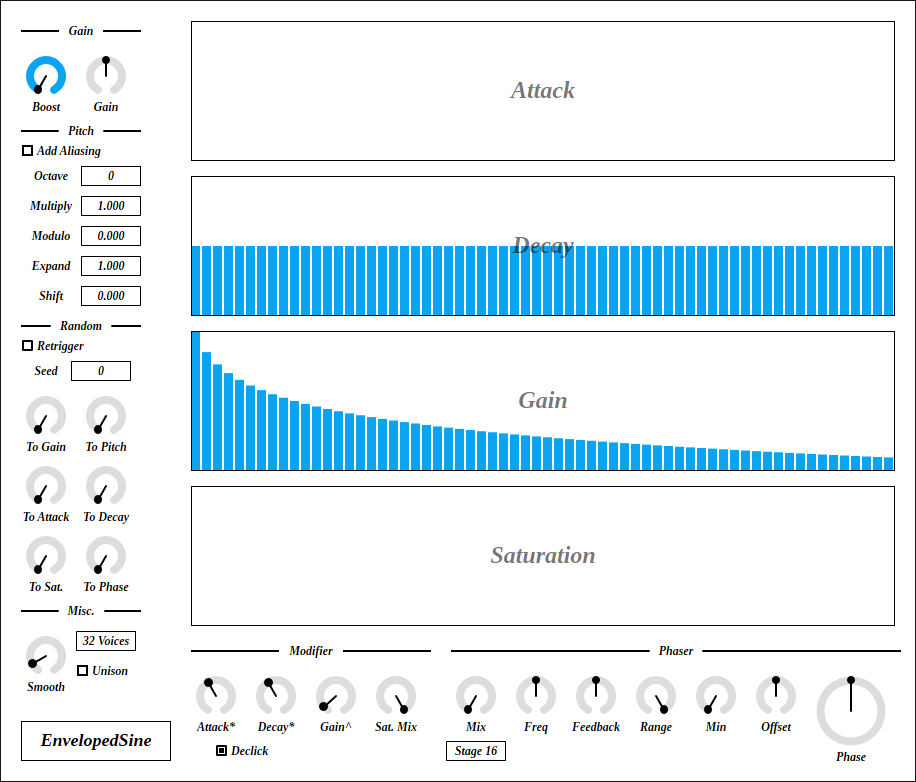
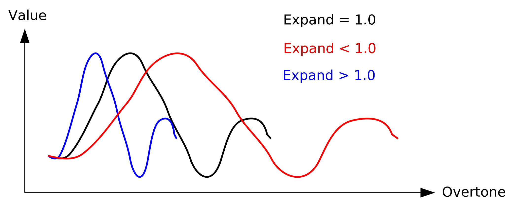

Update: 2020-06-15

EnvelopedSine is an additive synthesizer that computes 64 sine waves for each note. Difference to IterativeSinCluster is that this synth has AD envelope and saturator for each oscillator. EnvelopedSine is better suited for percussive sounds.
EnvelopedSine requires CPU which supports AVX or later SIMD instructions.
The package includes following builds:
macOS build isn’t tested because I don’t have Mac. If you found a bug, please file a issue to GitHub repository or send email to ryukau@gmail.com.
Linux build is built on Ubuntu 18.0.4 and tested on Bitwig 3.1.2 and Reaper 6.03. Bitwig 3.1.2 seems to have a bug that occasionally blackouts GUI.
Place *.vst3 directory to:
/Program Files/Common Files/VST3/ for Windows.$HOME/.vst3/ for Linux./Users/$USERNAME/Library/Audio/Plug-ins/VST3/ for macOS.DAW may provides additional VST3 directory. For more information, please refer to the manual of the DAW.
Extract preset zip, then place preset directory to the OS specific path:
/Users/$USERNAME/Documents/VST3 Presets/Uhhyou$HOME/.vst3/presets/Uhhyou/Users/$USERNAME/Library/Audio/Presets/UhhyouPreset directory name must be the same as the plugin. Make Uhhyou directory if it does not exist.
If DAW doesn’t recognize the plugin, try installing C++ redistributable (vc_redist.x64.exe). Installer can be found in the link below.
On Ubuntu 18.0.4, those packages are required.
If DAW doesn’t recognize the plugin, take a look at Package Requirements section of the link below and make sure all the VST3 related package is installed.
REAPER on Linux may not recognize the plugin. A workaround is to delete a file ~/.config/REAPER/reaper-vstplugins64.ini and restart REAPER.
At first time, create color config file to:
/Users/USERNAME/AppData/Roaming/UhhyouPlugins/style/style.json on Windows.$XDG_CONFIG_HOME/UhhyouPlugins/style/style.json on Linux.
$XDG_CONFIG_HOME is empty, make $HOME/.config/UhhyouPlugins/style/style.json./Users/$USERNAME/Library/Preferences/UhhyouPlugins/style/style.json on macOS.Below is a example of style.json.
{
"fontPath": "",
"foreground": "#ffffff",
"foregroundButtonOn": "#000000",
"foregroundInactive": "#8a8a8a",
"background": "#353d3e",
"boxBackground": "#000000",
"border": "#808080",
"borderCheckbox": "#808080",
"unfocused": "#b8a65c",
"highlightMain": "#368a94",
"highlightAccent": "#2c8a58",
"highlightButton": "#a77842",
"highlightWarning": "#8742a7",
"overlay": "#ffffff88",
"overlayHighlight": "#00ff0033"
}Hex color codes are used.
First letter # is conventional. Plugins ignore the first letter of color code, thus ?102938, \n11335577 are valid.
Do not use characters outside of 0-9a-f for color value.
fontPath: Absolute path to *.ttf font file. Not implemented in VST 3 version.foreground: Text color.foregroundButtonOn: Text color of active toggle button. Recommend to use the same value of foreground or boxBackground.foregroundInactive: Text color of inactive components. Currently, only used for TabView.background: Background color.boxBackground: Background color of inside of box shaped components (Barbox, Button, Checkbox, OptionMenu, TextKnob, VSlider).border: Border color of box shaped components.borderCheckbox: Border color of CheckBox.unfocused: Color to fill unfocused components. Currently, only used for knobs.highlightMain: Color to indicate focus is on a component. Highlight colors are also used for value of slider components (BarBox and VSlider).highlightAccent: Same as highlightMain. Used for cosmetics.highlightButton: Color to indicate focus is on a button.highlightWarning: Same as highlightMain, but only used for parameters which requires extra caution.overlay: Overlay color. Used to overlay texts and indicators.overlayHighlight: Overlay color to highlight current focus.Knob and slider can do:
There is an additional control for number sliders used for Octave, Seed etc.
Control with many blue vertical bars (BarBox) have some keyboard shortcuts. BarBox is used by Attack, Decay, Gain and Saturation. Shortcuts are only enabled after left clicking overtone control. Cheat sheet can be popped up by clicking plugin title on bottom left.
| Input | Control |
|---|---|
| Ctrl + Left Drag | Reset to Default |
| Shift + Left Drag | Naive Draw (Skip bars between frames) |
| Right Drag | Draw Line |
| a | Alternate Sign |
| d | Reset Everything to Default |
| D | Toggle Min/Mid/Max |
| e | Emphasize Low |
| E | Emphasize High |
| f | Low-pass Filter |
| F | High-pass Filter |
| i | Invert Value (Preserve minimum) |
| I | Invert Value (Minimum to 0) |
| n | Normalize (Preserve minimum) |
| N | Normalize (Minimum to 0) |
| p | Permute |
| r | Randomize |
| R | Sparse Randomize |
| s | Sort Descending Order |
| S | Sort Ascending Order |
| t | Subtle Randomize (Random walk) |
| T | Subtle Randomize (Converge to 0) |
| z | Undo |
| Z | Redo |
| , (Comma) | Rotate Back |
| . (Period) | Rotate Forward |
| 1 | Decrease |
| 2-9 | Decrease 2n-9n |
If the image is small, use Ctrl + Mouse Wheel or “View Image” on right click menu to scale.
Diagram only shows overview. It’s not exact implementation.

4 big controls on top right.
Gain envelope attack and decay for each oscillator.
Gain for each oscillator.
Saturation gain for each oscillator.
Both controls output gain. Peak value of output will be Boost * Gain.
When checked, the synth enables rendering of sine waves over nyquist frequency.
Roughly speaking, nyquist frequency is the highest frequency that can be reconstructed from recorded digital signal. When generating sound, it’s possible to set value that is higher than nyquist frequency. However, the result may contain unexpected frequency due to a phenomenon called aliasing. Add Aliasing is option to add those aliasing noise.
Note octave.
Change sine wave frequency.
Equation is noteFrequency * (1 + fmod(Multiply * pitch, Modulo)). pitch is calculated from note pitch and overtone index. fmod(a, b) is a function that returns reminder of a / b.
Scaling factor for overtone controls.

Amount of right shift to overtone controls.

Randomize parameters. These are more effective when used with Unison.
When checked, reset random seed for each note-on.
Random seed. This value change random number sequence.
Amount of randomization to overtone controls. Equation is value * random. Range of random is [0.0, 1.0).
Amount of randomization to pitch.
Amount of randomization to phase.
Time length to change some parameter value to current one. Unit is in second.
List of parameters related to Smooth. * represents wild card.
Gain section.Phaser section, except nStages.Other parameter uses the value obtained from the timing of note-on for entire duration of a note.
Maximum polyphony. Lowering the number of this option reduces CPU load.
When checked, unison is enabled.
When unison is enabled, 1 note uses 2 voices. 1 voice is placed on left and other is placed on right. Combining Unison with Random.To Phase, Random.To Pitch, etc. can be used to make sound with stereo spread.
Multiplier for Attack/Decay in overtone control section.
When checked, it reduces click noise that occurs when the value of Attack and/or Decay is 0.
Exponent to Gain in overtone control. Following is the equation of gain of an oscillator.
Gain.Boost * Gain.Gain * pow(Overtone.Gain, Modifier.Gain^)Mixing ratio of dry/wet signal of saturation. Dry : Wet becomes 0 : 1 when turned the knob to rightmost.
Number of all-pass filter.
Mixing ratio of dry/wet signal of phaser. Dry : Wet becomes 0 : 1 when turned the knob to rightmost.
LFO frequency.
Amount of feedback. Feedback is disabled when the knob is pointing to 12 o’clock. It becomes negative feedback when turned to left and positive feedback when turned to right.
Range of all-pass filter modulation by LFO.
Minimum value of all-pass filter modulation by LFO.
LFO phase offset.
LFO phase. This can be used to make sound with automation. Turning Freq to leftmost sets LFO frequency to 0.
EnvelopedSine is licensed under GPLv3. Complete licenses are linked below.
If the link above doesn’t work, please send email to ryukau@gmail.com.
VST is a trademark of Steinberg Media Technologies GmbH, registered in Europe and other countries.